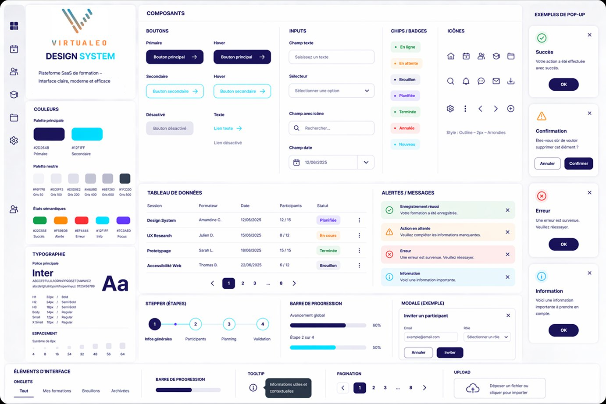
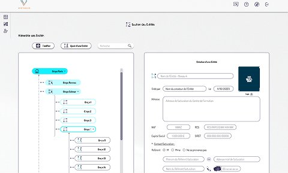
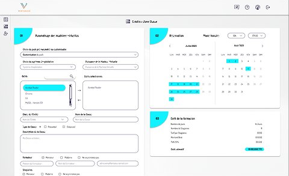
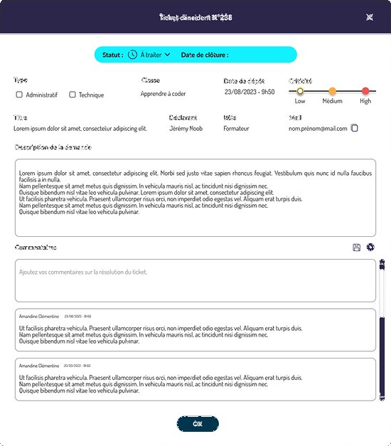
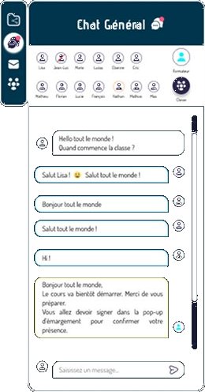
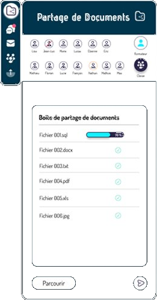

Projet 02 · Solution SaaS de formation
Virtualeo
Optimisation d'une plateforme SaaS de formation pour renforcer la compréhension du produit, faciliter l'adoption et renforcer la crédibilité auprès des futurs clients.
Contexte & enjeux produit
Virtualeo est une plateforme SaaS permettant d'organiser et gérer des formations en présentiel et distanciel. Lorsque j'ai rejoint le projet, le produit existait déjà mais présentait un manque de clarté dans sa structure et ses parcours, ce qui rendait difficile la compréhension de sa valeur et limitait son adoption.
Problème produit
- Difficulté à comprendre rapidement la valeur du produit
- Parcours complexes générant des frictions
- Manque de hiérarchisation des informations
- Fonctionnalités peu mises en avant
Un produit riche, mais difficile à appréhender et à utiliser efficacement.
Démarche — Discovery
- Analyse des parcours utilisateurs et identification des points de friction
- Échanges avec le chef de projet pour comprendre les enjeux business
- Identification des problèmes majeurs : surcharge d'information, manque de hiérarchie
Insight clé : le problème principal n'était pas le manque de fonctionnalités, mais leur manque de lisibilité et de mise en valeur.






Décisions & arbitrages
- Ne pas ajouter de nouvelles fonctionnalités — se concentrer sur l'existant
- Prioriser la clarté de la proposition de valeur dès les premiers écrans
- Simplification des parcours clés (création, gestion, navigation)
- Refonte de la hiérarchie de l'information
- Alignement des choix UX/UI avec les enjeux business (démos, conversion)
Impact
- Meilleure compréhension de la proposition de valeur dès les premiers écrans
- Réduction des incompréhensions lors des démonstrations produit
- Expérience plus fluide permettant aux utilisateurs de réaliser leurs premières actions plus rapidement
- Interface plus cohérente et perçue comme plus professionnelle